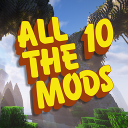
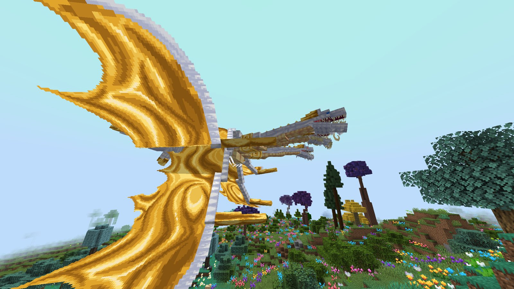

Lionel's Additions - ATM10
By Lionel
All the Mods 10 with new bosses, a gun-filled endgame city, Thaumcraft and more. One file installs it and keeps it up to date.

What's in it
- The Lost City: Spore's infection kept to one endgame dimension. Guns, power-ups, Pack-a-Punch, Calamity fights and trophies for the ATM Star.
- Boss fights that hold up: 38 mod bosses with damage caps, and their own music, title cards and boss bars. Credits roll at your first ATM Star.
- Gear dimensions: in the Twilight Forest, Aether, Undergarden, Eternal Starlight and Antarchy only gear from that place works.
- New content, each with its own quest chapter: Antarchy's ant dimensions, Lycanites Mobs (ported by us), Thaumcraft, Alex's Caves, Touhou Little Maid and an Ad Astra gate. Bounties go on the Bounty Board.
- Blights: rare strong mobs wreathed in coloured fire, worth a lot of XP.
- Faster: start-up and join fixes (about 300 s down to 208 s to launch on our PC) and a Java setup the updater does for you.
How to install
- Download Update Lionel's Additions.bat (the orange button) and keep it.
- Run it. Pick your launcher (Modrinth or ATLauncher), then Fresh install for a new copy or Update for an ATM10 8.1 you already have.
- Follow what it says. When there's an update, run the same file again: it updates itself too.
Windows only. Your keybinds, settings, worlds and servers are never touched.
R
Update 2026-10-30 01:19
Changelog
- 2026-10-28Prize Shop, Home tab and the new sounds, 2026-10-28
- 2026-10-29Hub tabs, 2026-10-29
- 2026-10-292026-10-29
- 2026-10-28Casino Wardrobe + Pocket Change, 2026-10-28
- 2026-10-28Chip store: more end-tier prizes, 2026-10-28
- 2026-10-28Charta
- 2026-10-28Journey counts like the book; wardrobe button in the inventory, 2026-10-28
- 2026-10-25Single-player worlds would not load on clients, 2026-10-25
- 2026-10-25The Casino tab stuck on "Asking the server...", 2026-10-25
- 2026-10-25The hub opened the wardrobe, 2026-10-25
- 2026-10-23The casino, slices 1 to 4, 2026-10-23 night
- 2026-10-23Hub fixes and the full title plate, 2026-10-23 late
- 2026-10-23The tabbed hub, mastery routes and a clean Start Here, 2026-10-23 night
- 2026-10-23The plain deck, and the Reflective Necklace's sparks, 2026-10-23 evening
- 2026-10-23The guide: fixes from the first play, and main questlines, 2026-10-23 evening
- 2026-10-23The guide, slice 7, 2026-10-23: loadouts, armour only
- 2026-10-23The guide, slices 5 and 6, 2026-10-23: nudges and Discord
- 2026-10-23The guide, slice 4, 2026-10-23: the Additions hub's pages
- 2026-10-23The guide, slice 3, 2026-10-23: titles
- 2026-10-23The guide, slice 2, 2026-10-23: the Path screen and quest moments
- 2026-10-23The guide, first slice, 2026-10-23
- 2026-10-23Lost City: Distant Horizons really back on after leaving, 2026-10-23
- 2026-10-23Colony Command 0.10.0, 2026-10-23
- 2026-10-23Lost City leaving redraw, potato DH, stub menu fix, MineVegas Casino, 2026-10-23
- 2026-10-23Colony Command, an RTS view for MineColonies, 2026-10-23
- 2026-10-22Verity says no line twice, 2026-10-22 late
- 2026-10-22Lost City fog, 2026-10-22 late
- 2026-10-22Lost City switch fixes, glory kill shield, pylons and claims, 2026-10-22 late
- 2026-10-22Potato settings inside the Lost City only, 2026-10-22 night
- 2026-10-22Lost City frame rate, 2026-10-22 night
- 2026-10-22Next potato update, staged 2026-10-22 evening
- 2026-10-22Colony flag crash and potato settings, 2026-10-22
- 2026-10-22Fresh install and potato mode in the updater, 2026-10-22
- 2026-10-22Frame rate from a player's Spark profile, 2026-10-22
- 2026-10-22Advanced Solar Generator drawn in the wrong place, 2026-10-22
- 2026-10-21Three fixes, 2026-10-21 night
- 2026-10-21Verity in the menu, Tarot tracker, potato question; 2026-10-21 evening
- 2026-10-21Verity voice fixes, 2026-10-21 evening. mods\verity-6.0.0-beta.9-neoforge-0.1.jar
- 2026-10-21Hotfixes and speed, 2026-10-21 afternoon
- 2026-10-21Verity in the pack
- 2026-10-21Published 2026-10-21 12:52
- 2026-10-21Boss rewards
- 2026-10-21Per-file updates through Cloudflare R2
- 2026-10-21The Shooting Star
- 2026-10-21Potato mode in the updater
- 2026-10-21MineColonies quest chapter
- 2026-10-20Draconic Reactor core invisible
- 2026-10-20Published 2026-10-20 17:59
- 2026-10-20Flying bosses kept fading in and out
- 2026-10-20The King's
- 2026-10-20The Boss Tarot
- 2026-10-20Antarchy portals: "No safe arrival spot was found", then sent to spawn
- 2026-10-20Two script fixes
- 2026-10-20The game's own music never played; Prefab quest
- 2026-10-19Published 2026-10-19 18:40
- 2026-10-19Prefab added; music plays more often, with a setting
- 2026-10-19Midnight Mantle sky no longer rebuilt every frame
- 2026-10-19Totem recharge shown on the item
- 2026-10-18Published 2026-10-18 23:56
- 2026-10-19Undertrial Spawners on Thoraxis's underside spawn their mobs
- 2026-10-18Boss caps eased
- 2026-10-18Published 2026-10-18 23:03
- 2026-10-18Server hang 2026-10-18 22:53: a 1,000,000-block cut pasted in one tick; cuts back to 100,000; the server updated
- 2026-10-18More Emperor Scorpions; bed bugs capped; the King and Queen checked
- 2026-10-18Leaderboard in the pause menu
- 2026-10-18RLCraft-level difficulty; boss leaderboard to everyone and to Discord; no Blight posts
- 2026-10-18Native gear has limits too; one titanium
- 2026-10-18Building Gadgets 2 energy: Cut-Paste and Copy-Paste gadgets hold 50,000,000
- 2026-10-18Published and the server updated
- 2026-10-18Server crash 2026-10-18 20:09: Building Gadgets 2 could not save a stored copy. BOTH SIDES
- 2026-10-18Survival: Quantum armour, dodge, floors x1.6, swing charge; ore sight for titanium and 16 more metals
- 2026-10-18No boss card or music for Antarchy mobs that spawn on their own
- 2026-10-18No natural Calamities; Piglin Mask teeth and Midnight Mantle stars off everywhere
- 2026-10-18Building Gadgets 2: copies and cuts up to 1,000,000 blocks
- 2026-10-18Text as black boxes for a player: ImmediatelyFast's font atlas resizing off
- 2026-10-18Server-only mods off the clients
- 2026-10-18Forgematica
- 2026-10-17The Lost City pace: walking and sprinting at normal speed there
- 2026-10-17The added mods' ores in the mining dimension
- 2026-10-17Bosses: three ways round the caps closed
- 2026-10-17Launch time on the title screen
- 2026-10-17Multiblock toast
- 2026-10-17Discord: a join post, highlights, a "people are on" ping and session recaps
- 2026-10-17Combat sounds, "multiblock formed", settings in the Mods menu
- 2026-10-17Touhou Little Maid out; voice chat's name tag hook for players only
- 2026-10-17Server froze when a player left; rejoining hung on "Encrypting"
- 2026-10-16A web page for the pack, like a CurseForge listing
- 2026-10-15Alex's Caves in, Mowzie's Mobs and Hex Casting out; boss music, cards and bars; fixes
- 2026-10-15Auto-join on the title screen; Thaumcraft's ATM Star gate
- 2026-10-15Thaumcraft gear and spells at Allthemodium level; a guard against the Vigil freeze
- 2026-10-12Thaumcraft 6 in the pack
- 2026-10-11Thaumcraft bosses under the boss rules, ahead of the port
- 2026-10-11Low TPS in the Lost City
- 2026-10-11Counter frozen during a Calamity; Insta-Kill finishes mini-bosses; the HUD hides the other mods' bars
- 2026-10-11Guns scaled to the boss rate, every hit lands; red damage edge; fight results in the HUD
- 2026-10-11Boss damage reverted; finishers match the gun
- 2026-10-11The HUD replaces the action bar and chat in the city; XP and hunger move into it
- 2026-10-11guns.js in the test profile
- 2026-10-11Power-ups and the hive panel in the HUD's style
- 2026-10-11Bosses take a third more again
- 2026-10-11Boss fights about four minutes; snipers and hand cannons cut; the Kar98 crash
- 2026-10-10Revolvers nerfed on bosses; boss titles and the music card in the HUD
- 2026-10-10The Lost City HUD
- 2026-10-10Crash fix at a Calamity's withdrawal, Calamity locator, gunfire ends Ghostly Shape
- 2026-10-10Bases in the Lost City: gun tables only work there, FTB Chunks claims are held ground
- 2026-10-10Swaps, songs, harder bosses, faster Blights, no ghost form, invisible chests
- 2026-10-10Calamity timer, the tally on screen, unpacked guns, no Spore farms
- 2026-10-10Punched heavy guns, multiplayer Calamities, one city-wide count, no disorienting mobs, a simpler ATM path and a
- 2026-10-10Gun prices, the Lost City made easier, a seamless Pack-a-Punch glow
- 2026-10-09Pack-a-Punch glow, Spore boss bars, one Calamity at a time, boss music that plays through
- 2026-10-09No round drops for a player with a creative ammo box that feeds the gun
- 2026-10-09Frame rate and server time in the Lost City, from Lionel's two Spark profiles
- 2026-10-09Calamity fights for groups, heavy weapons, a Calamity rotation, shared trophies, creative ammo boxes
- 2026-10-09Spore armour by grade, a swarm cap, fewer rounds that always arrive, Pack-a-Punch camo
- 2026-10-09Power-ups redone: Kaboom! fixed, Max Ammo out, four new ones; boss cards need sight
- 2026-10-09Launch speed: MEGA Cells index, Punchy models, Shooting Star fonts
- 2026-10-09After Lionel's playtest: fewer infected, no ammo on the floor, automatic guns stronger
- 2026-10-09Spore's mini-bosses and a trophy gate for the ATM Star
- 2026-10-09Spore armour reloads guns faster; power-ups get their own cards
- 2026-10-09TaCZ's "[O] to interact" text off; the Hex Casting chapter restyled
- 2026-10-08Guns for the Lost City: TaCZ added
- 2026-10-08"Make it shine": boss card typefaces, the title screen for everybody, no more "too many mods"
- 2026-10-08Blights everywhere, with coloured fire
- 2026-10-08Start-up speed fixes for everybody, and an updater that uploads itself
- 2026-10-08Altar bosses: no flying except on a mount, more minions
- 2026-10-08Harder royals and altar bosses, minions that last, boss music alone, sounds with the shake
- 2026-10-08Credits at the atm star
- 2026-10-08Lycanites altars fixed, boss music with the music slider at zero
- 2026-10-08Boss music, intro and "defeated" cards, screen shake, kill announcements
- 2026-10-08Maid Fairies were too rare: more ways to earn Power
- 2026-10-07Touhou Little Maid added; five quest chapters restyled after ATM10's Eternal Starlight chapter
- 2026-10-07Mowzie's Mobs added
- 2026-10-07Lost City look and sound, boss counter with sounds and a horde, quest layout
- 2026-10-07Lycanites dungeons fixed, more XP, gear collection quests
- 2026-10-07Guaranteed Sieger and Vigil
- 2026-10-07Lost City: much more XP, every Spore creature spawns, Lycanites summons allowed
- 2026-10-07The "Lionel's Additions" quest chapters redone
- 2026-10-06Dap Your Homies: NeoForge build, and the crash at start fixed in the jar
- 2026-10-06Third round
- 2026-10-06Second round on the same list
- 2026-10-05Lionel's feedback list of 2026-10-05: loot, Lunarians, the Lost City, Lycanites dungeons, bounties, quests
- 2026-10-05Log clean-up: empty Ad Astra chests fixed, three duplicate jars removed
- 2026-10-05Antarchy: 4 to 5 frames a second in Thoraxis, fixed in the jar
- 2026-10-05After the second play-test
- 2026-10-05Lycanites Mobs: random events switched on, and limits for a server
- 2026-10-05The Lost City made the endgame dimension
- 2026-10-05Spore and The Lost Cities added
- 2026-10-05Ad Astra: a quest chapter and an ATM Star gate
- 2026-10-05Spears
- 2026-10-04Lycanites Mobs added
- 2026-10-04Antarchy: three ant dimensions, under the gear rules, and a step towards the ATM Star
- 2026-10-04Healing in boss fights
- 2026-10-04Blocked buffs, Elytra, and server cost
- 2026-10-04Boss fights and dimension gear rules
- 2026-10-04Villager News: nose on villagers held as items
- 2026-10-04Quest ids
- 2026-10-04WaterFrames replaces WebDisplays
- 2026-10-04The updater
- 2026-10-04ATM10 update notices removed
- 2026-10-04Quest text
- 2026-10-04Vanilla Backport
- 2026-10-04Measured launch times on this PC
- 2026-10-04Launch time
- 2026-10-04Shooting Star fonts
- 2026-10-04Quests and recipes
- 2026-10-04The black hole
Mods added to or replaced in ATM10 8.1 (48). Everything else is the original pack.
- Alexscaves
alexscaves-1.1.1-neoforge+1.21.1.jarAlex's Caves Continued: six cave biomes. - Antarchy
antarchy-2.1.1+1.21.1-neoforge.jarthree ant dimensions and ten bosses. - Antos
antos-neoforge-1.21.1-1.2.2.jarneeded by Antarchy (its in-game computer and guide) - ApothicEnchanting
ApothicEnchanting-1.21.1-1.6.1.jarClient only. The pack's own jar without its coremod (Lionel turbo coremod replaces it). - AppliedTaCZ
AppliedTaCZ-1.21.1-19.0.1.jar - Cc tweaked
cc-tweaked-1.21.1-forge-1.120.2.jarCC: Tweaked computers. - Charta
charta-neoforge-1.21.1-1.2.5.jar - Chloride
chloride-NEOFORGE-mc1.21.1-v1.8.1.jarClient only. Video settings and performance options. - Codxlib
codxlib-1.6.1-neoforge+1.21.1.jarneeded by Alex's Caves. - Colony command
colony-command-0.10.0.jar - Coopmod
coopmod-1.0.0.jarDap Your Homies (Coop Moves), NeoForge build, with its bundled Fabric stand-in classes moved to another package by us so the game starts. - CreativeCore
CreativeCore_NEOFORGE_v2.13.50_mc1.21.1.jarneeded by WaterFrames - Destroying minecraft
destroying-minecraft-1.0.0.jarthe black hole. - Dynamic fps
dynamic-fps-3.11.4+minecraft-1.21.0-neoforge.jarClient only. Lowers FPS while the window is in the background. - Easy villagers
easy-villagers-neoforge-1.21.1-1.1.42.jarThe pack's own Easy Villagers with ONE class replaced by us, so that Lunarians cannot be picked up. - Entity model features
entity_model_features-3.3.9-1.21-neoforge.jarneeded by Villager News. - Entity sound features
entity_sound_features-0.8.2-1.21-neoforge.jarneeded by Villager News - Entity texture features
entity_texture_features-7.2.4-1.21-neoforge.jarneeded by Villager News. - Integrated api
integrated_api-neoforge-1.21.1-1.8.2.jarneeded by Antarchy - Jamlib
jamlib-neoforge-1.3.6+1.21.1.jara library mod. - Lionel boss music
lionel-boss-music-1.0.0.jarours: boss music, title cards and bars, credits at the ATM Star, Blight fire, power-ups. - Lionel glory kills
lionel-glory-kills-0.25.0.jarours: finishers on weakened Lost City mobs and bosses. - Lionel pong
lionel-pong-1.0.2.jarours: Pong on the loading screen. - Lionel turbo
lionel-turbo-1.0.0.jarours: start-up and join speed fixes, two crash fixes, one server fix (bow mobs). - Lionel turbo coremod
lionel-turbo-coremod-1.0.0.jarClient only. ours: does Apothic Enchanting's start-up work in Java, faster. - Lostcities
lostcities-1.21-8.4.6.jarThe Lost Cities: the Lost City dimension. - Lycanitesmobs
lycanitesmobs-0.0.8-alpha-neoforge.jarLycanites Mobs, ported by us from Forge 1.20.1. - Midnightlib
midnightlib-neoforge-1.9.3+1.21.1.jarneeded by the black hole - Minevegas casino
minevegas-casino-neoforge-1.21.1-1.0.4.jar - Packapunch
packapunch-1.2.3-hotfix.jarPack-a-Punch for TaCZ guns. - Packetfixer
packetfixer-3.3.1-1.20.5-1.21.X-merged.jarlets bigger network packets through, so joining a full server does not fail. - Platform
Platform-neoforge-1.21.1-1.3.3.jarneeded by Vanilla Backport. - PlayerAnimationLibNeoforge
PlayerAnimationLibNeoforge-1.1.4+mc.1.21.1.jarneeded by Dap Your Homies. - Prefab
prefab-neoforge-1.0.9.jarPrefab: ready-made houses and buildings from items. - Shut up gl error
shut_up_gl_error-neoforge-2.0.0+1.21.1.jarClient only. Hides OpenGL error spam in the log. - Sizeable foliage
sizeable_foliage-neoforge-1.21.1-1.2.1.jarneeded by Antarchy - Spear backport
spear-backport-neoforge-1.8.0-1.21.1.jarBackported Spears 1.8.0 (the 1.21.11 spear). - Spore
spore_1.21.1_2.2.0j_neo.jarFungal Infection: Spore (119 MB, mostly music). - Tacz
tacz-neoforge-1.21.1-1.1.8-hotfix-r7.jarTimeless and Classics Zero: the guns of the Lost City. - Thaumcraft
thaumcraft-6.1.26-neoforge-0.1.jarThaumcraft 6, ported by us to NeoForge 1.21.1. - The shooting star demo
the-shooting-star-demo-1.4.4-neoforge.jarThe Shooting Star (demo). - VanillaBackport
VanillaBackport-neoforge-1.21.1-1.1.7.10.jarpale garden, happy ghast, sulfur caves etc. - Veil
veil-neoforge-1.21.1-4.5.1.jarneeded by the black hole - Verity
verity-6.0.0-beta.9-neoforge-0.1.jarVerity, the talking AI companion ball (ours: ported from Forge). - Villager news addon port
villager-news-addon-port-neoforge-1.21.1-1.3.5.jarVillager News, with one class fixed by us. - Waterframes
waterframes-NEOFORGE-mc1.21.1-v2.1.23.jarvideo and picture screens. - Watermedia
watermedia-2.1.37.jarClient only. (the video player). - Watermedia youtube plugin
watermedia_youtube_plugin-2.1.2.jarClient only. (YouTube links)